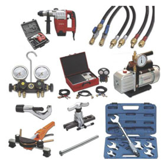

Установка кондиционеров
|
Установка климатических систем имеет ряд специальных операций, многие из которых требуют определенного опыта и профессионализма. Достаточно красноречивым является тот факт, что более 80% всех дефектов и отказов, выявленных в системах кондиционирования, являются следствием неквалифицированного монтажа или использование дешёвых расходных материалов при установке кондиционера. Поэтому для правильной и надёжной работы приобретённого оборудования следует обращаться к профессионалам. В этом Вам помогут специалисты компании «Метроклимат». Установка сплит-системы или кондиционера включает в себя следующие операции: Выбор места установки наружного и внутреннего блока кондиционера. Установка наружного блока должна осуществляться на достаточно прочной стене в месте, удобном для последующего сервисного обслуживания. Таким местом для квартир верхних этажей является место под окном. Для помещений, расположенных на первом этаже здания, рекомендуется устанавливать наружный блок не ниже 2 м над уровнем земли, во избежание повреждения или хищения блока злоумышленниками. Также целесообразно размещать наружные блоки сплит-систем на балконах и лоджиях зданий при условии выполнения требований нормативной документации. Наружный блок кондиционера рекомендуется устанавливать на закрепленном на стене монтажном кронштейне, рассчитанного на установку блока заданного веса. Для крепления кронштейна к стене рекомендуется применять анкерные болты или другой крепеж, обеспечивающий надежное его крепление. |  |
Внутренний блок сплит-системы должен устанавливаться в помещении с учетом функциональных требований и дизайна помещения. Место установки внутреннего блока кондиционера должно выбираться таким образом, чтобы не было непосредственной (прямой) подачи охлажденного воздушного потока на находящихся в помещении людей. Во избежание вибрации кондиционера, которые могут привести к его разрушению в процессе эксплуатации, поверхность стены, на которой устанавливается настенный блок кондиционера, должна быть прочной и гладкой. Высота расположения настенного блока и расстояния до ближайших поверхностей (стен, потолка) отмечены в инсталляции по установке, входящей в состав приобретённого оборудования. Крепление внутреннего блока на стену осуществляется с помощью монтажной пластины, входящей в комплект поставки кондиционера. Монтажная пластина крепится к стене строго по уровню. Только в этом случае обеспечивается правильный слив конденсата.
Соединение блоков сплит-системы включает в себя прокладку межблочных коммуникаций. В состав коммуникаций входит фреонотрасса, межблочный кабель управления и дренаж. Фреонотрасса состоит из медных трубок разного диаметра (газовая и жидкостная), размещённых в высокотемпературной теплоизоляции. Коммуникации могут быть проложены в декоративном коробе, либо в стене. Штробление стены для укладки коммуникаций производится в период ремонтных работ в помещении. Для соединения коммуникаций между внешним и внутренним блоками сплит-системы в наружной стене проделывается сквозное отверстие диаметром 40-60 мм.
Соединение медных труб между блоками сплит-системы осуществляется при помощи стыковочных штуцеров и фитингов. Особое внимание следует уделять качеству подготовки концов соединяемых медных трубок. Для резки труб необходимо использовать специальный труборез, входящий в комплект специального монтажного инструмента. Медные трубы нельзя отпиливать ножовкой, поскольку остаются неровности и шероховатости, а также потому, что невозможно добиться гладкого и перпендикулярного распила трубы.
После того, как на обрезанную трубку надета накидная гайка, срез трубки развальцовывается. Для развальцовки труб используется специальный развальцовочный инструмент. При правильной развальцовке трубы внутренняя поверхность раструба имеет однородный блеск, а сам раструб имеет равномерную толщину. Недопустимым является образование на трубе перегибов, уменьшающих ее «живое сечение», а также снижающее давление в системе. При прокладке больших по протяженности участков коммуникаций, трубопроводы между собой соединяют пайкой серебряными или медно-фосфатными припоями. Эти припои являются твердосплавными и характеризуются высокой прочностью и стойкостью к вибрациям.
Прокладка дренажной магистрали осуществляется в штроб (на этапе ремонта) или в декоративном коробе до места сброса конденсата. С учетом того, что кондиционер удаляет из воздуха 1…2 литра воды в час, вывод дренажа в канализацию является наилучшим вариантом отвода конденсата. К системе канализации дренаж целесообразно подключать при помощи дренажной воронки, которая позволит исключить проникновению в помещение запахов из канализации. Если по каким-либо причинам это сделать невозможно, дренажный трубопровод выводят на улицу. В этом случае необходимо предусмотреть обогрев дренажа, что позволит использовать кондиционер при отрицательных температурах, не опасаясь замораживания дренажа кондиционера. Наихудшим вариантом является сбор конденсата в какую-нибудь емкость, которую нужно периодически опорожнять.
Для подключения кондиционера в электросеть целесообразно проложить отдельный силовой кабель, а в распределительном щитке установить отдельный автомат. Поэтому несостоявшийся ремонт в помещении позволит выполнить монтаж блоков кондиционера и необходимую межблочную проводку без ущерба для общей отделки помещения.
После подсоединения и подключения коммуникаций необходимо провести вакуумирование контура системы кондиционера. Для вакуумирования контура сплит-системы к заправочному крану подсоединяют вакуумный насос. Откачку системы производят в течение 1…1,5 часа, при давлении не выше 4 мм рт. ст. После этого перекрывают кран и по манометру контролируют изменение давления в системе. Если проложенная фреонотрасса больше технических параметров установленного оборудования, то требуется произвести дозаправку системы. Дозаправка контура хладагентом производится после этапа вакуумирования при работающем кондиционере через заправочный кран жидким хладагентом. Заправку ведут до достижения давления в контуре 4,5…5,5 кг/см2, что соответствует нормальной работе кондиционера в режиме охлаждения. Контроль количества заправленного хладагента можно вести по шкале зарядного баллона с фреоном или по показанию заправочных весов. По окончании заправки системы хладагентом кондиционер выключают, закрывают заправочный кран на наружном блоке, быстро отсоединяют зарядный шланг и закрывают штуцер глухой заглушкой. Задержка может привести к выбросу в атмосферу газообразного хладагента. По окончании процесса заправки системы хладагентом убеждаются в отсутствии утечек с помощью специальных приборов: течеискателей или методом обмыливания всех стыков. Кондиционер готов к работе.
СТАНДАРТНАЯ УСТАНОВКА КОНДИЦИОНЕРА
Под стандартной установкой кондиционера подразумевается наиболее простой вариант установки сплит-системы. В этом случае наружный блок размещается на кронштейнах под окном, таким образом, чтобы верхний край наружного блока кондиционера был не выше уровня подоконника.
Внутренний блок кондиционера устанавливается в помещении на стене, примыкающей к окну, на расстоянии 0,7…1,0 метра от внешней стены. Расстояние между потолком и верхней поверхности внутреннего блока 10…20 см. Высота потолка не должна превышать 3,5 метров.
Межблочные фреоновые коммуникации, силовой кабель и дренажная система прокладываются следующим образом:
внутри помещения коммуникации закрываются декоративным пластиковым коробом белого цвета;
отверстие во внешней стене внутри помещения, через которые прокладываются коммуникации, так же закрываются декоративным коробом. Короб располагается с наклоном в 5-10° для слива конденсата.
Толщина внешней стены, через которую прокладываются коммуникации, не должна превышать 80 сантиметров.
Снаружи здания коммуникации располагаются вдоль стены, при этом крепление коммуникаций к стене или укладывание коммуникаций в декоративный короб не производится. Общая длина коммуникаций между блоками не должна превышать 5 метров.
Дренажная труба для слива конденсата от внутреннего блока выводится наружу на 10-20 см через ближайшую внешнюю стену. От внешнего блока дренажная труба не выводится.
Силовой кабель длиной до 5 метров прокладывается в декоративном коробе белого цвета сечением около 20х15 мм и длиной до 3 м. Силовой кабель снабжается вилкой.
Время начала монтажа согласовывается с Заказчиком. Стандартный монтаж кондиционера занимает около 4 часов. К началу монтажа заказчик должен обеспечить:
- свободный доступ к окну, из которого будет производиться монтаж внешнего блока и возможность полного открывания этого окна;
- свободный доступ к участку стены, на которой будет располагаться внутренний блок и декоративные короба с коммуникациями и силовым кабелем;
- укрытие предметов и поверхностей, которым может повредить кирпичная или бетонная пыль и мелкая крошка.
Под нестандартным монтажом подразумевается монтаж с учетом дополнительных требований Заказчика. Например, установка наружного блока сбоку или над окном, крепление наружных коммуникаций к стене, увеличение общей длины коммуникаций, укладка коммуникаций в штроб (углубление в стене) и т.д. Любые отклонения от стандартного монтажа приводят к удорожанию работ.